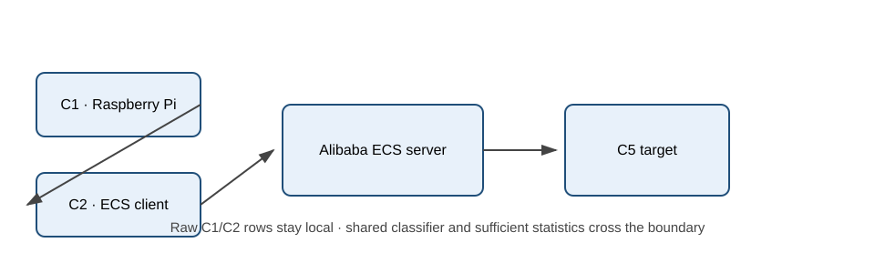
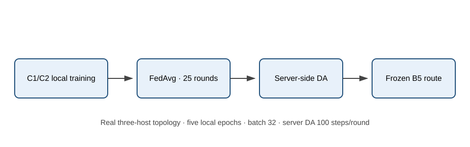
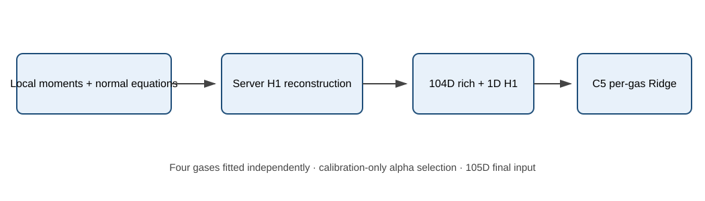
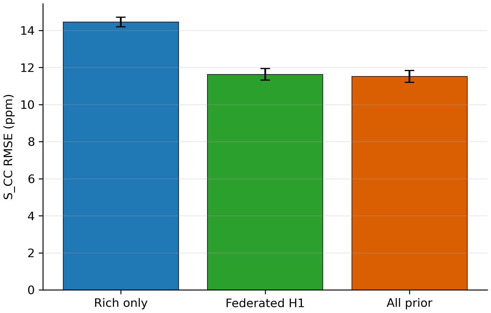
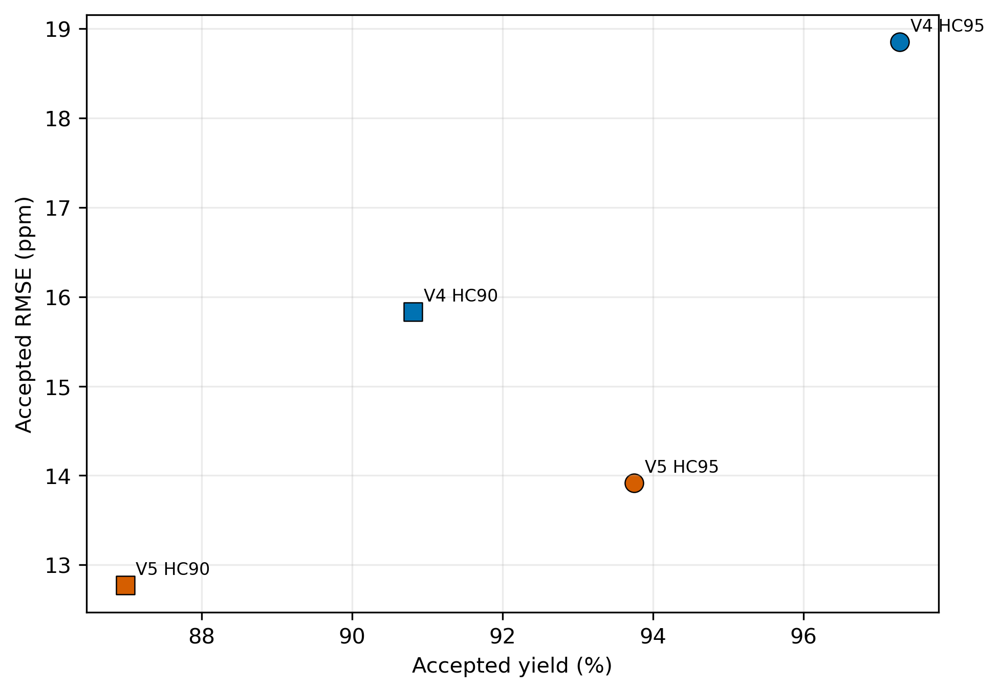
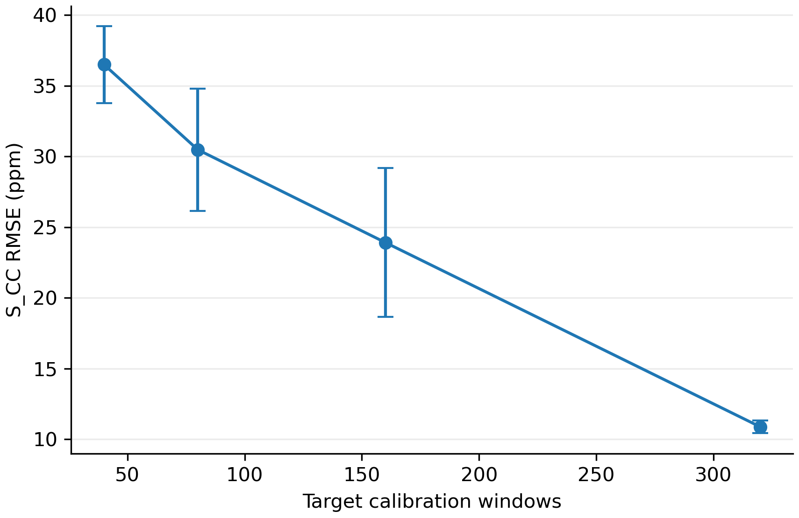

GAPS：面向跨设备气体感知的联邦分类与轻量回归个性化
摘要
金属氧化物半导体气体传感器在不同器件间存在明显的响应差异与漂移，使集中训练得到的类别识别和浓度估计模型难以直接迁移至目标设备；与此同时，边缘部署还要求模型在通信、计算开销和不可靠样本处置之间取得可审计的平衡。本文提出 GAPS，将真实设备联邦分类、目标校准辅助的服务器适配、基于充分统计量的源域 Ridge 参考以及轻量目标个性化组织为一条完整的跨设备感知链路。源设备在本地使用原始样本训练分类器，并通过联邦参数交换形成全局类别路由；浓度回归部分交换分气体特征矩与正规方程统计量，在服务器重构 Federated H1 源域参考，再将其预测与 104 维时序统计特征拼接为 105 维输入，由目标设备校准集拟合分气体 Ridge。三个关键结果为：第一，五个独立分类训练种子上的 Accuracy 为 0.989118 ± 0.005983；第二，Federated H1 个性化在五条冻结分类路由上的正确路由 RMSE 为 11.6339 ± 0.3142 ppm，并将回归参数量由 28,737 降至 844；第三，在 Raspberry Pi 5 上，简化回归核心的单窗口 p50 延迟为 3.725 ms，而正式基线为 4.571 ms。结果表明，源域浓度结构可以通过充分统计量转化为紧凑且可复用的目标个性化先验，但选择性输出仍需同时考虑误差与覆盖率，且其性能依赖目标校准预算。本文采用 calibrated-target held-out-window evaluation：同一具体窗口不跨 calibration/test，但同一原始文件产生的不同窗口可能分属两者，因此结论刻画的是校准后的留出窗口性能，而非对全新测量文件或会话的泛化。
关键词：跨设备气体感知；联邦分类；服务器端域适配；充分统计量 Federated Ridge；目标个性化；选择性输出
I. 引言
气体传感阵列能够以较低硬件成本支持环境监测、工业安全与边缘智能感知，但金属氧化物半导体器件的制造差异、老化和工作状态变化会改变响应幅值与动态过程 [1], [2], [19]。对于需要同时输出气体类别与浓度的系统，这种跨设备偏移并非单一分类问题：类别错误会把样本送入错误的浓度专家，而连续浓度估计又要求模型分辨同一类别内部更细粒度的响应差异。因此，类别路由、浓度回归与不确定样本处置应在统一系统对象中被评估。
传统校准迁移通常依赖成对测量、集中样本或显式特征映射 [1], [19]。这些方法能够针对特定设备对进行校正，却难以直接满足源设备原始观测不集中汇集的部署约束。完全依赖目标设备重新标定则会增加标签与维护成本；仅使用源域模型又难以消除目标器件的幅值和动态差异。由此需要一种明确使用少量目标校准数据、同时保留源数据本地性的跨设备建模协议。
联邦平均为多设备协同训练提供了基本范式 [3]，异构联邦优化和边云协同进一步揭示了设备与数据非独立同分布带来的挑战 [4], [16], [17]。已有气体传感联邦研究主要关注模型更新或传感器替换 [18]，但“模型参数不离开客户端”并不足以自动解决目标设备适配、连续浓度先验构造和部署输出边界。尤其是，当服务器使用带标签的目标校准集进行适配时，其问题应被表述为 calibration-assisted adaptation，而不是零样本迁移或无监督域适配。
现有研究还较少把分类、回归和部署可靠性作为一条有路由依赖的链路统一处理。分类器需要跨物理设备形成稳定类别路由；回归器既要吸收源域浓度结构，又要以很小的目标端模型完成个性化；选择性输出则不能只追求较低的 accepted error，而忽略覆盖率和特定气体的退化。与此同时，论文中的算法证据、真实设备通信证据、运行时效率证据和校准边界必须保持相互可区分的身份。
为此，本文提出 GAPS，并围绕三个研究问题组织系统与证据：RQ1，真实设备联邦分类与目标校准辅助的服务器适配能否在 C1/C2→C5 协议下形成稳定的气体类别路由；RQ2，源设备能否仅交换充分统计量重构 Federated H1，并与轻量 105 维目标 Ridge 共同保持浓度估计能力；RQ3，该链路在边缘延迟、模型规模、通信、选择性输出与校准预算方面呈现何种效果和边界。本文的贡献概括如下：
- 在 Raspberry Pi 源客户端、云端源客户端和服务器构成的真实三机拓扑上，实现联邦分类与目标校准辅助的服务器适配，并以五个完整训练种子评估最终分类路由的稳定性。
- 构建并验证基于充分统计量的分气体 Federated Ridge 源参考机制：将标准 Ridge 重构嵌入跨设备气体浓度个性化链路，使源端原始样本行保持本地，并以重构预测与 104 维目标特征共同形成 105 维轻量个性化输入。
- 对分类、正确路由与端到端回归、参数与包规模、真实设备通信、Pi/PC 延迟、选择性输出以及校准预算敏感性进行系统评估，并显式限定 held-out-window、隐私机制、种子覆盖和运行时角色。
II. 相关工作
A. 跨设备气体感知与校准迁移
公开气体传感阵列数据揭示了长期漂移和设备差异对分类边界的影响 [1], [2], [15]。集成分类器可缓解时间漂移 [1]，Direct Standardization 等校准迁移方法则通过源—目标响应映射抵消传感阵列偏移 [19]。这些研究奠定了气体传感器校准迁移的实验基础，但通常需要集中处理数据、成对参考或针对特定迁移关系重新建模。尚未解决的问题是：在源原始数据保持本地的约束下，如何同时形成目标设备可用的类别路由和浓度参考。
B. 联邦感知与个性化
FedAvg 通过按本地样本量加权的参数平均实现去中心化训练 [3]，FedProx 等工作进一步讨论系统与统计异质性 [4]。边云协同和个性化联邦学习把全局共享与设备特定模型结合 [16], [17]，气体传感场景也出现了面向传感器替换的联邦模型更新研究 [18]。然而，已有方法多以单一预测任务或优化器为中心，尚缺少从真实设备分类路由、源回归知识交换到目标端轻量个性化的可审计闭环。本文因此不以经典联邦优化器排名为研究目标，而聚焦于任务链路和部署边界。
C. 域适配、轻量回归与选择性预测
MMD、CORAL 和域对抗学习分别从核均值、二阶统计与判别式对齐角度缓解分布偏移 [5]–[7]；原型学习提供了类别语义约束 [8]，经验回放则为持续学习中的历史知识保留提供了代表性机制 [9]。本文的 replay feature distillation 是冻结实现中的时序一致性组件，不把 [9] 作为域适配或原型学习主张的直接依据。现代分类器校准和选择性预测关注置信度、拒绝机制及质量—覆盖率权衡 [10]–[12]，残差结构与注意力模块为时序表示提供通用实现组件 [13], [14]。现有工作仍较少回答：如何在带标签目标校准可用的前提下，将这些分类适配组件与不传输原始行的源域线性回归参考、目标端微型回归头以及三态输出联合验证。GAPS 的重点正是这一系统级衔接，而不是把选择性聚合或某个 QC 组件单独作为主要创新。
III. 问题定义与数据协议
A. 设备、输入与标签
设两个源客户端为 \(\mathcal{C}_s=\{C_1,C_2\}\)，目标设备为 \(C_5\)，服务器记为 \(S\)。每个样本是由 8 个传感通道构成的时间窗口 \(\mathbf{x}\in\mathbb{R}^{100\times 8}\)，对应气体类别标签 \(y\in\{0,1,2,3\}\) 和浓度标签 \(c\in\mathbb{R}_{+}\)（ppm）。四类气体依次为 Ethanol、CO、Ethylene 和 Methane；Ethanol/Ethylene 覆盖 12.5–125 ppm（量程 112.5 ppm），CO/Methane 覆盖 25–250 ppm（量程 225 ppm），每类均包含 10 个浓度层级。
源客户端使用本地训练集更新分类模型，并在构建回归参考时仅上传统计量。目标设备提供 320 个 calibration 窗口，用于服务器分类适配、目标 Ridge 的超参数选择与重拟合，以及冻结 QC 规则的校准。1360 个冻结 test 窗口仅在相应模型、超参数或阈值锁定后用于评价；同一冻结 test universe 曾服务于多个已经完成的分析阶段，但不参与 fitting、selection 或 reselection。分类器给出预测路由 \(\hat y=f_\theta(\mathbf{x})\)，回归链路根据该路由选择源参考 \(h_{\hat y}\) 和目标头 \(g_{\hat y}\)，得到 \(\hat c=g_{\hat y}(\phi(\mathbf{x}),h_{\hat y}(\phi(\mathbf{x})))\)。
Table I. 数据集、预处理、设备角色与评估协议。
| 项目 | 冻结设置 | 协议含义 |
|---|---|---|
| 传感与采样 | 8 个 MOS 通道；100 Hz→10 Hz | 块均值降采样；相对电导响应 |
| 响应与窗口 | 原始实验约 60–170 s；100×8；stride 50 | 10 s 窗口；5 s 步长；先构窗后划分 |
| 源客户端 | C1：Pi 5；C2：云客户端 | 各 2360 个本地训练窗口 + 320 个源侧适配/参考窗口 |
| 服务器 | 云端 Flower server | 模型聚合、语义统计、目标辅助适配与 H1 重构 |
| 目标设备 | C5：320 calibration / 1360 frozen test | 类别—浓度分层的留出窗口协议 |
| 评估身份 | calibrated-target held-out-window evaluation | 非 original-file/session independent |
预处理先移除原始前 20 s，将随后前 30 s 的电导均值作为基线，并计算 \((G-G_0)/G_0\)。同一具体窗口不跨 calibration/test，但同一原始文件的不同窗口可能跨子集。
B. 测试访问边界
窗口构造先于 calibration/test 划分。目标 calibration/test 按气体类别和浓度分层，同一具体 sample row 不重复出现，但不同窗口可能来自同一原始测量文件。因此，filename overlap 描述的是文件内相关性，不等同于使用 test labels。冻结 test universe 曾用于多个已完成分析，但每个阶段均在相应模型、超参数或阈值锁定后评价；test labels 未用于模型拟合、超参数或 \(\alpha\) 选择、QC 阈值选择、checkpoint 选择，亦未在证据冻结后用于方法重选。

IV. 方法
A. 真实设备联邦分类
分类器采用三层深度可分离 TCN 残差编码器，通道数为 8→32→48→48，扩张率为 1、2、4，并在每层使用带可学习仿射参数的 Instance Normalization。编码序列经四头自注意力和注意力池化后投影为 64 维表示，最后由四类线性头输出 logits。冻结实现不对输入窗口额外执行 z-score；分类主干内部的 Instance Normalization 属于模型结构。训练时启用 0.1 dropout 和 0.01 特征噪声，MixStyle 关闭。
第 \(t\) 轮中，客户端 \(i\) 从服务器模型 \(\theta^t\) 出发执行本地优化，返回 \(\theta_i^{t+1}\) 和样本量 \(n_i\)。基础聚合权重为 \(w_i=n_i/\sum_jn_j\)，服务器模型为
前三轮使用 \(\tilde w_i^t=w_i\)。此后，若客户端与服务器语义原型均可用，实现会依据客户端原型与服务器语义原型的平均余弦相似度 \(s_i^t\) 对权重作下限为 0.3 的缩放，并重新归一化：\(\tilde w_i^t\propto w_i\max(s_i^t,0.3)\)。这一选择性缩放仅作为联邦实现组件，用于描述冻结代码行为，不被视为本文的独立主要创新。
本地分类目标由交叉熵、原型对比对齐和上一轮模型的 replay 特征蒸馏组成：
回归损失在最终分类配置中关闭；第一轮或相应历史状态不可用时，对齐或 replay 项按实现条件不产生贡献。客户端使用 Adam，学习率 \(5\times10^{-4}\)、batch size 32、每轮 5 个 local epochs；优化器每轮重新创建且不使用学习率调度。整个训练包含 25 轮，两客户端每轮均参与。
B. 目标校准辅助的服务器适配
服务器在每次联邦聚合后执行 100 个适配步骤，并将适配后的参数作为下一轮全局模型。适配同时使用 C1/C2 的源侧适配参考集和 C5 calibration；由于 C5 标签进入类条件对齐与语义约束，该过程属于带标签目标校准辅助的适配。为突出方法逻辑而避免把冻结实现误写为十项独立创新，主文将目标分为四组：
\(\mathcal L_{\mathrm{sup}}\) 在源侧适配参考集上保持分类判别能力；\(\mathcal L_{\mathrm{dist}}\) 汇总类条件 CORAL、全局/类条件/类阶段 MMD2 和类条件 Wasserstein-min 对齐；\(\mathcal L_{\mathrm{semantic}}\) 汇总语义原型锚定、本地原型拟合和特征—类阶段原型一致性；\(\mathcal L_{\mathrm{regularization}}\) 约束设备残差统计。各组内部系数来自冻结实现，不在本研究中重新搜索。完整十项展开式、固定系数、启用条件和零权重项列于 Appendix B。该复合目标用于产生稳定分类路由，本文不把其中每一项分别宣称为新的域适配算法。
C. 充分统计量 Federated H1
分类训练完成后，源回归参考不通过网络训练神经回归头，而是对四类气体分别重构 Ridge。令客户端 \(i\) 对某一气体的 104 维特征矩阵为 \(X_i\in\mathbb R^{n_i\times104}\)。客户端首先上传 \((n_i,\sum X_i,\sum X_i^2)\)。服务器据此计算全局逐维均值与尺度：
其中 \(|\sigma_j|<10^{-9}\) 的维度置为 1。服务器将 \((\mu,\sigma)\) 返回客户端；客户端构造标准化特征 \(Z_i=(X_i-\mu)/\sigma\) 和带截距设计矩阵 \(D_i=[\mathbf 1,Z_i]\)，再上传 \(A_i=D_i^\top D_i\)、\(b_i=D_i^\top y_i\) 以及局部浓度上下界。对候选 \(\alpha\)，服务器按
重构 Ridge，截距不正则化，\({}^{\dagger}\) 表示广义逆。候选集合固定为 \(\{0,0.01,0.1,1,10,100,1000\}\)。各客户端仅返回源侧适配参考集上的 clipped SSE 和样本数；服务器以 \(\sqrt{\sum_i\mathrm{SSE}_i/\sum_i n_i}\) 选择最小参考 RMSE 对应的 \(\alpha\)，并在本地训练集与源侧适配参考集的合并统计量上重构最终 H1。该过程不向服务器提供原始 source rows、\(X/y\) 表或逐样本预测，但当前实现没有安全聚合或差分隐私保护。
D. 104 维特征契约与 105 维目标个性化
特征提取严格对应冻结 runtime 的顺序和维度。它不依赖分类器的 64 维隐表示，而是从 100×8 窗口及其元数据计算可解释统计量。
Table II. 冻结 104D rich-feature contract。
| 特征组 | 维度 | 物理/统计含义 |
|---|---|---|
| 逐通道时序统计 | 64 | 8 个通道各包含 mean、std、min、max、amplitude、首末点 slope、相邻差绝对值均值和最大值（8×8） |
| 跨通道与排序响应统计 | 19 | 全局幅值/差分统计，通道 slope 与 amplitude 的均值/标准差，前四大幅值及其比值、前两大 slope 比值 |
| 窗口时序与质量元数据 | 10 | 窗口起止/中心/长度、onset 与 minimum 时间、中心相对时间、插值比例和窗内最大采样间隔 |
| 响应阶段 one-hot | 3 | main response、recovery、unknown |
| 实验阶段标签 one-hot | 4 | early、middle、late、unknown |
| 阶段编号 one-hot | 4 | phase 0、1、2、unknown |
| 合计 | 104 | 冻结 schema；维度或有限性不满足时 runtime fail closed |
维度核对：64 + 19 + 10 + 3 + 4 + 4 = 104。该顺序与冻结 feature schema 一致，不根据实验结果增删特征组。
对目标 calibration 中每个气体类别，先按类别—浓度确定性分层得到 60 个 fit 窗口和 20 个 validation 窗口。源 H1 根据部署可见的预测类别产生一维浓度参考 \(\hat c_H\)，与 \(\phi(\mathbf x)\in\mathbb R^{104}\) 拼接为 \(\psi(\mathbf x)=[\phi(\mathbf x),\hat c_H]\in\mathbb R^{105}\)。目标 Ridge 在同一候选 \(\alpha\) 网格上以 calibration-validation RMSE 选参，随后在该类别全部 80 个 calibration 窗口上重拟合。测试时不使用真实类别选择专家，而使用冻结分类器路由：
源 H1 与目标 Ridge 均按训练浓度上下界裁剪预测。四个 H1 头含 \(4\times(104+1)=420\) 个回归参数，四个目标头含 \(4\times(105+1)=424\) 个回归参数，总计 844；分类器的 22,765 个参数单独计数。


E. 选择性输出与运行时角色
系统保留两个功能身份不同的对象。正式选择性输出基线包含既有多参考风险语义，并在冻结 HC95/HC90 工作点给出 accept/review/reject；只有 accept 行允许产生自动浓度输出。简化回归核心只实现“冻结分类器→Federated H1→105D 目标 Ridge”，其 portable release 证明资产哈希校验、加载和 synthetic smoke 可在 clean checkout 中闭合，但不继承正式 QC 的性能身份。另一个基于分类置信度、prototype/support distance 等组件构造的候选 QC 虽通过 runtime parity，却因总体覆盖率和 CO 的预先设定采用准则未满足而未替代正式基线。为避免把工程对象混成同一结论，本文分别报告回归核心规模/延迟和正式 QC 的 accept 子集误差与接受覆盖率。
V. 实验设置
A. 数据划分、拓扑与训练配置
数据来自五个传感单元的 8 通道响应。正式主线使用 C1/C2 作为源客户端、C5 作为目标设备；C3/C4 不进入最终三机训练。C1 运行于 Raspberry Pi 5，C2 和服务器分别运行于独立云主机，Flower 流量通过 reverse tunnel 的 loopback 端口传输，不暴露公共 Flower 端口。服务器在联邦分类阶段不读取 C1/C2 原始训练行。分类训练为 25 轮，每轮两客户端各执行 5 个 local epochs；Client Adam 和 server-adaptation Adam 的学习率均为 \(5\times10^{-4}\)，server adaptation 每轮 100 steps。五个分类种子只改变随机种子、run ID 和派生资产路径，数据、拓扑、轮数、优化器与算法开关保持一致。
B. 对照方法与证据身份
分类主结果报告最终校准辅助联邦分类器的五种子稳定性。Source-only FedAvg、equal-label target CE、历史 distribution/semantic mechanisms 和 corrected single-seed configurations 只作为附录中的机制上下文；由于其实现语义与证据阶段不同，它们不构成最终方法的严格逐组件消融，也不用于重选最终分类器。
回归采用三个同协议对照。Rich features-only 只使用 104D 目标窗口描述；Federated-H1 personalization 在其上增加一个充分统计量 Ridge 源预测；all-prior personalization 则增加三个在 C1/C2 上冻结的源预测：H1 是输入 104D 特征的分气体 Ridge，H2 是输入 104D 特征、含 16 个隐藏单元的分气体 ReLU MLP，H3 是共享的 16-unit ReLU MLP，其输入为 104D 特征与 predicted-route 的 4 维 one-hot。H2/H3 使用标准化输入、LBFGS 和 800 次最大迭代，冻结资产选择的正则系数分别为每气体 0.01 和共享 0.1。三项预测与 104D 特征拼接为 107D target Ridge 输入；这些 source heads 在本轮均不重新训练，只作为较复杂的 source-prior reference。单一 H1 能否替代该 reference 由预先设定的 1% 性能保持容差判断，该规则不是形式化统计检验。
C. 指标
分类报告 Accuracy、Macro-F1、NLL 和 top-label ECE。令 \(p_{n,y_n}\) 为真实类概率，则 \(\mathrm{NLL}=-N^{-1}\sum_n\log\max(p_{n,y_n},10^{-12})\)。ECE 使用 15 个等宽置信度区间：\(\mathrm{ECE}=\sum_b(|B_b|/N)|\mathrm{acc}(B_b)-\mathrm{conf}(B_b)|\)。回归误差 \(e_n=\hat c_n-c_n\)，报告 \(\mathrm{RMSE}=\sqrt{N^{-1}\sum_ne_n^2}\)、\(\mathrm{MAE}=N^{-1}\sum_n|e_n|\) 和 \(\mathrm{NRMSE}=\sqrt{N^{-1}\sum_n(e_n/r_{y_n})^2}\)，其中 Ethanol/Ethylene 的 \(r_y=112.5\) ppm，CO/Methane 的 \(r_y=225\) ppm。\(S_{\mathrm{CC}}\) 只统计 predicted route 与真实类别一致的行，用于隔离回归能力；\(S_{\mathrm{ALL}}\) 统计全部 1360 行，用于端到端性能。选择性输出同时报告接受覆盖率和 accept 子集 RMSE，不以单一误差值决定是否采用候选。
D. 种子范围与运行时 benchmark
分类均值和样本标准差来自五次完整、独立的分类训练。回归五路比较固定 source H1/H2/H3 heads，并对每个分类 seed 产生的 predicted route 重新执行同一 target Ridge \(\alpha\) 选择与重拟合；因此，回归标准差反映的是分类路由变化，不代表所有 source/target 回归头被独立训练五次。运行时 benchmark 使用 CPU、单线程、batch size 1，在固定顺序的 C5 1360 个窗口上预热 50 次后测量 500 次；稳态计时不包含磁盘 I/O。PC 与 Raspberry Pi 5 使用相同运行对象，报告 p50/p95、峰值 RSS 和包大小；不根据 benchmark 结果修改模型。
VI. 结果
A. RQ1：分类路由稳定性
Table III. 最终联邦分类器的五种子性能。
| Metric | Mean | Sample SD | Min | Max |
|---|---|---|---|---|
| Accuracy | 0.989118 | 0.005983 | 0.980147 | 0.994853 |
| Macro-F1 | 0.989134 | 0.005960 | 0.980220 | 0.994852 |
| NLL | 0.100237 | 0.037833 | 0.054088 | 0.150294 |
| ECE | 0.010607 | 0.005774 | 0.005050 | 0.019368 |
五次训练的 Accuracy 范围为 0.980147–0.994853，Macro-F1 的均值与 Accuracy 接近，未出现由某一类别完全失效造成的宏平均崩塌。NLL 和 ECE 提供概率质量的补充证据。上述结果支持“最终分类器在当前 C1/C2→C5、相同数据与超参数、五个训练种子范围内稳定”的限定结论；它不外推到未观测的物理目标设备或所有随机初始化。
B. RQ2：源回归参考与目标个性化
Table IV. 五条冻结分类路由上的回归个性化比较。
| 语义方法名 | 目标输入 | S_CC RMSE (ppm) | S_ALL RMSE (ppm) | 证据解释 |
|---|---|---|---|---|
| Rich features-only target Ridge | 104D | 14.4546 ± 0.2621 | 20.4668 ± 3.4577 | 无 source regression reference |
| Federated-H1 target personalization | 104D + 1 source reference | 11.6339 ± 0.3142 | 18.5080 ± 4.3211 | 选定轻量回归核心；满足预先设定的 1% 性能保持容差 |
| All-prior target personalization | 104D + 3 source references | 11.5208 ± 0.3148 | 18.5982 ± 4.4192 | 5/5 路由的绝对 S_CC 均更低 |
在五条冻结路由的描述性均值上，加入单个 Federated H1 后 \(S_{\mathrm{CC}}\) 相对 rich-only 下降 2.8208 ppm，且五条路由均显示相同改善方向，说明源域浓度映射提供了目标统计特征之外的有效参考。All-prior 的绝对 mean \(S_{\mathrm{CC}}\) 进一步降低 0.1131 ppm，并在 5/5 路由上更低；Federated H1 相对其退化 0.981637%，落在预先设定的 1% 性能保持容差内，同时把 source regression references 从三个减少为一个，因而被保留为最终简化依赖。该决策是工程简化下的性能保持选择，不是“Federated H1 精度更高”，也不是带假设检验的统计结论。

充分统计量 H1 与集中汇集同一 source rows 拟合的 pooled Ridge 在机器精度范围内数值一致：四类气体选择相同 \(\alpha\)，C5 H1 预测最大绝对差为 \(6.2532\times10^{-8}\) ppm，\(S_{\mathrm{ALL}}\) 和 \(S_{\mathrm{CC}}\) RMSE 绝对差分别为 \(9.4460\times10^{-11}\) 和 \(6.7040\times10^{-12}\) ppm。该结果验证的是线性模型重构等价性，不代表安全聚合、差分隐私或完整网络联邦回归已被实现。
C. RQ3：选择性输出、模型规模与边缘效率
候选 QC 在两个冻结工作点上均以较低覆盖率换取较低 accept 子集 RMSE。由于预先设定的采用准则同时约束总体覆盖率与 CO 表现，候选没有取代正式选择性输出基线。以较严格工作点为例，候选的 CO 接受覆盖率为 64.12%，低于正式基线的 84.71%，且 CO accept 子集 RMSE 从 19.7243 增至 20.8318 ppm。该结果说明风险排序能够富集高误差样本，但总体 accept 子集 RMSE 的改善不能替代类别特定采用准则。

Table V(a). 运行对象的功能身份、回归规模与包大小（建议 IEEE 双栏排版使用 table*）。
| 运行对象 | 功能身份 | Regression parameters | Bundle bytes | 状态 |
|---|---|---|---|---|
| 正式完整基线 | 多参考回归 + 正式选择性输出语义 | 28,737 | 2,971,538 | 正式选择性输出基线 |
| 简化回归核心 | 分类路由 → Federated H1 → 105D target Ridge；不承载正式 QC 身份 | 844 = 420 + 424 | 289,916 | 选定轻量回归核心 |
| 独立 QC 候选 | 简化回归 + candidate risk/QC | 844 | 1,065,632 | 已评价，未采用 |
Table V(b). CPU 单窗口稳态延迟；batch=1，threads=1，warmup=50，runs=500。
| 运行对象 | PC p50/p95 (ms) | Pi 5 p50/p95 (ms) | 解释边界 |
|---|---|---|---|
| 正式完整基线 | 5.434 / 13.945 | 4.571 / 4.621 | 正式选择性输出对象 |
| 简化回归核心 | 4.072 / 14.786 | 3.725 / 3.765 | Pi p50/p95 较低；PC p95 未改善 |
| 独立 QC 候选 | 5.477 / 19.312 | 4.523 / 4.571 | 候选对象，不用于替代正式 QC |
回归参数从 28,737 降至 844，而不是以百分比近似描述；844 明确分解为 420 个 Federated H1 参数和 424 个目标 Ridge 参数，分类器 22,765 个参数另计。Pi 上简化回归核心的 p50/p95 均低于正式完整基线，但 PC p95 从 13.945 ms 变为 14.786 ms，因此不能宣称所有平台或所有延迟分位均改善。Portable release 只构成可移植加载和 synthetic smoke 的工程证据，不产生新的 test 性能数字。
D. 校准预算边界
统一 group-aware 描述性协议中，320 个 calibration 窗口的 mean \(S_{\mathrm{CC}}\) RMSE 为 10.8724 ± 0.4391 ppm，减少到 160 个窗口后增至 23.9156 ± 5.2550 ppm；80 和 40 个窗口时分别为 30.4799 ± 4.3262 和 36.4992 ± 2.7156 ppm。该轨迹表明目标个性化对校准覆盖敏感。Group-aware 320 的数值来自后冻结协议敏感性分析，不能替换正式 historical selection 下 seed-specific 的 11.3416 ppm，也不用于重选方法。

VII. 讨论
A. 分类与回归为何呈现不同难度
在本数据和当前模型下，分类主要依赖四种气体之间的判别结构，而浓度回归还需要在同一气体内部解析连续响应幅值、阶段和器件偏移；前者的类别间差异可能较强，后者则对标定密度和局部动态更敏感。此外，端到端回归还承受分类路由误差：一旦 \(\hat y\neq y\)，样本进入错误的分气体 H1 和目标 Ridge。因此，接近 0.99 的分类 Accuracy 不意味着 \(S_{\mathrm{ALL}}\) 会同步接近 \(S_{\mathrm{CC}}\)，二者回答不同问题。
B. 为什么单一 H1 有效，而 all-prior 增益有限
104D rich features 主要描述目标窗口自身的时序形状、幅值、阶段和质量。H1 额外注入由 C1/C2 浓度标签形成的分气体线性映射，相当于为目标 Ridge 提供一个已在源域压缩过的浓度坐标。其相对 rich-only 的一致改善与这一机制相符。三个 source predictions 的信息存在较强相关性，且最终由仅 80 个 calibration 窗口/气体拟合的线性头组合；因此，额外两个神经 source references 可能主要提供冗余修正，表现为 all-prior 仅有 0.1131 ppm 的 mean \(S_{\mathrm{CC}}\) 优势。这里的解释是与观察结果一致的机制推断，不是由独立因果实验直接证明。
C. 为什么候选 QC 未被晋级
选择性预测的目标不是单独最小化 accept 子集误差，而是在预先冻结的风险方向与阈值下控制覆盖率和类别特定后果。候选 QC 的总体 accept 子集 RMSE 较低，说明其风险能够筛出部分困难样本；但更严格工作点上的 CO 接受覆盖率和 RMSE 采用准则未满足，表明筛选收益在气体类别间不均衡。保持正式基线是执行预先设定采用准则的结果，而不是否认候选风险分数的诊断价值。
D. 评价协议、隐私、种子与运行时限制
评价边界：本文采用类别—浓度分层的 window-level split。不同窗口可来自同一 measurement file，因此结果刻画校准后的 held-out-window performance，不刻画 original-file-independent 或 unseen-session generalization，也不支持 zero-shot target generalization。该相关性边界与 test-label leakage 不同：具体 sample row 不跨子集，test labels 未进入拟合或冻结选择。
隐私边界：分类阶段交换模型更新和语义统计，H1 阶段交换特征矩、正规方程及聚合验证统计；源原始样本行保持本地。但是，充分统计量可能携带信息，当前系统未提供 secure aggregation、差分隐私或形式化攻击分析，因此只能主张数据流约束，不能主张形式化隐私保证。
种子边界：分类五种子来自完整独立训练；回归五路只改变冻结分类器产生的 route，并复用固定 source heads，再按每条 route 重建目标 Ridge。故其变异反映分类路由敏感性，而不是回归全过程的多种子不确定性。
运行时边界：正式完整基线承载冻结选择性输出性能；简化可移植核心承载最终 H1 回归核心和全新代码检出环境下的工程复现证据。二者不是同一运行对象，不能将前者的 accept 子集 RMSE 与后者的 844 参数拼接成一个端到端部署结论。当前 benchmark 也只覆盖指定 PC/Pi、CPU、batch/thread 和稳态设置。
未来工作：后续最有价值的扩展是 unseen-session 或 original-file-independent evaluation、增加物理目标设备，以及为充分统计量提供更强的隐私保护。经典联邦优化器排名、多目标重训、新 QC 或新回归头不属于当前投稿范围的未完成实验。
VIII. 结论
本文构建了面向跨设备气体感知的 GAPS 链路：真实源设备通过联邦分类与目标校准辅助适配形成类别路由；源域浓度结构通过充分统计量重构为 Federated H1；目标设备再以 104D 时序统计和一维 H1 参考拟合轻量 105D 分气体 Ridge。五种子证据支持当前 C1/C2→C5 协议下的分类稳定性，单一 H1 相对 rich-only 降低描述性 RMSE，并在预先设定的 1% 性能保持容差内保持 all-prior 的性能，同时将回归参数从 28,737 减少到 844。Pi benchmark 表明简化核心在该平台的 p50/p95 延迟均较低，但跨平台分位数并非一致改善；候选 QC 也因总体覆盖率和 CO 的采用准则未通过而未替代正式基线。上述结果共同说明，充分统计量源参考与轻量目标个性化能够形成紧凑的跨设备回归路径，但其适用性仍受目标校准、window-level 评价身份和隐私机制缺口约束。
Appendix A. 支撑性证据表
Table A1. Legacy 分类机制上下文。
| Configuration | Target labels | Distribution alignment | Semantic constraint | Accuracy | Evidence identity |
|---|---|---|---|---|---|
| A0 | 0 | None | None | 0.265441 | historical mechanism semantics；legacy single seed |
| A0T | 320 | None | Target supervised CE | 0.982353 | historical mechanism semantics；legacy single seed |
| A5 | 320 | Historical CORAL/MMD/stage/adversarial | Historical alignment + replay | 0.730147 | historical mechanism semantics；legacy single seed |
| A6 | 320 | None | Historical prototype/consistency/residual | 0.980147 | historical mechanism semantics；legacy single seed |
| B1 | 320 | Corrected class-conditional CORAL | Semantic core | 0.987500 | corrected single-seed screening |
| B2 | 320 | Corrected global/class MMD2 | Semantic core | 0.992647 | corrected single-seed screening |
| B3 | 320 | Corrected cross-domain class/phase stage MMD2 | Semantic core | 0.988971 | corrected single-seed screening |
| B4 | 320 | Corrected Wasserstein-min adversarial | Semantic core | 0.989706 | corrected single-seed screening |
| B5 (v3 screen) | 320 | Corrected full distribution terms | Semantic core | 0.988971 | corrected single-seed screening |
| Final classifier (seed42) | 320 | Corrected full distribution terms | Semantic core | 0.980147 | final frozen canonical；five-seed evidence in Table III |
Historical A0/A0T/A5/A6、corrected B1–B5 screening 与 final five-seed evidence 是三种不同证据身份；旧 A7 不进入比较。该表不作 final classifier 的严格逐组件因果消融解释。
Table A2. Federated-H1 分气体回归与 CO-high。
| Scope | Gas/subset | RMSE (ppm) | Seed/N | Interpretation |
|---|---|---|---|---|
| Five-route S_ALL | Ethanol | 17.2408 ± 7.2293 | 5 routes | mean ± sample SD |
| Five-route S_ALL | CO | 18.4250 ± 3.3937 | 5 routes | mean ± sample SD |
| Five-route S_ALL | Ethylene | 22.5064 ± 8.1922 | 5 routes | mean ± sample SD |
| Five-route S_ALL | Methane | 13.4193 ± 1.5341 | 5 routes | mean ± sample SD |
| Formal seed42 | CO high, 200–250 ppm | 35.0212 | N=102 | frozen seed42 subset；not a five-route mean |
Table A3. H1 充分统计量重构的机器精度数值一致性审计。
| Audit item | Frozen value | Status |
|---|---|---|
| Per-gas selected \(\alpha\) agreement | 4/4 gases | 机器精度范围内数值一致 |
| Maximum absolute C5 H1 prediction difference | 6.2532×10−8 ppm | 机器精度范围内数值一致 |
| S_ALL RMSE absolute difference | 9.4460×10−11 ppm | 机器精度范围内数值一致 |
| S_CC RMSE absolute difference | 6.7040×10−12 ppm | 机器精度范围内数值一致 |
Table A4. 应用层通信证据与边界。
| Channel/object | Amount (bytes) | Scope | Boundary |
|---|---|---|---|
| 分类 downlink, 25 rounds | 8,764,300 | 2 clients/round | application-level serialized bytes |
| 分类 uplink, 25 rounds | 8,808,350 | 2 clients/round | application-level serialized bytes |
| 分类 total, 25 rounds | 17,572,650 | C1/C2↔server | transport bytes not collected |
| H1 one-shot theoretical serialized exchange | 7,710,128 | sufficient-statistics reconstruction | no raw rows/X/y/per-sample predictions；no secure aggregation/DP |
| H1 global model | 50,226 | server-to-runtime asset | serialized model artifact |
Table A5. 完整冻结 QC 诊断。
| Runtime/workpoint | Accept/review/reject | Acceptance coverage | Accept-subset RMSE (ppm) | CO coverage | CO RMSE (ppm) | Status |
|---|---|---|---|---|---|---|
| Formal HC95 | 1323/33/4 | 97.28% | 18.8520 | 96.76% | 19.7767 | 正式选择性输出基线 |
| Formal HC90 | 1235/107/18 | 90.81% | 15.8328 | 84.71% | 19.7243 | 正式选择性输出基线 |
| Candidate HC95 | 1275/41/44 | 93.75% | 13.9178 | 85.88% | 19.6774 | 已评价，未采用 |
| Candidate HC90 | 1183/113/64 | 86.99% | 12.7723 | 64.12% | 20.8318 | 已评价，未采用 |
Table A6. Calibration-protocol harmonization。
| Budget | Historical S_CC (ppm) | Group-aware S_CC (ppm) | G−H (ppm) |
|---|---|---|---|
| 320 | 11.3416 ± 0.0000 | 10.8724 ± 0.4391 | −0.4692 |
| 160 | 17.8621 ± 1.5586 | 23.9156 ± 5.2550 | 6.0536 |
| 80 | 28.4545 ± 3.3698 | 30.4799 ± 4.3262 | 2.0254 |
| 40 | 43.2442 ± 10.9745 | 36.4992 ± 2.7156 | −6.7449 |
Historical 与 group-aware 是两条不同协议身份的描述性轨迹；不跨协议选择候选，也不以 group-aware 320 替换正式 historical seed-specific 结果。
Appendix B. 冻结服务器适配目标的完整展开
正文将服务器适配目标按监督保持、分布匹配、语义约束和正则化四组呈现。为保证方法描述与冻结实现逐项对齐，其非零项及权重完整展开如下：
\(\mathcal L_{\mathrm{CE}}^{s}\) 作用于 C1/C2 的源侧适配参考集；目标监督交叉熵和 prototype-pair MMD 的权重为 0，legacy direct-alignment 显式关闭，因而不进入上式。原型拟合、一致性和残差项仅在所需当轮统计可用时产生贡献。该复合目标用于忠实描述最终冻结实现，不把十个子项分别主张为独立算法创新。
参考文献
- A. Vergara, S. Vembu, T. Ayhan, M. A. Ryan, M. L. Homer, and R. Huerta, “Chemical gas sensor drift compensation using classifier ensembles,” Sensors and Actuators B: Chemical, vol. 166–167, pp. 320–329, 2012, doi: 10.1016/j.snb.2012.01.074.
- J. Fonollosa, I. Rodríguez-Luján, and R. Huerta, “Chemical gas sensor array dataset,” Data in Brief, vol. 3, pp. 85–89, 2015, doi: 10.1016/j.dib.2015.01.003.
- B. McMahan, E. Moore, D. Ramage, S. Hampson, and B. A. y Arcas, “Communication-efficient learning of deep networks from decentralized data,” in Proc. AISTATS, PMLR 54, pp. 1273–1282, 2017.
- T. Li, A. K. Sahu, M. Zaheer, M. Sanjabi, A. Talwalkar, and V. Smith, “Federated optimization in heterogeneous networks,” in Proc. Mach. Learn. Syst. (MLSys), vol. 2, pp. 429–450, 2020.
- A. Gretton, K. M. Borgwardt, M. J. Rasch, B. Schölkopf, and A. Smola, “A kernel two-sample test,” Journal of Machine Learning Research, vol. 13, no. 25, pp. 723–773, 2012.
- B. Sun and K. Saenko, “Deep CORAL: Correlation alignment for deep domain adaptation,” in Computer Vision—ECCV 2016 Workshops, Amsterdam, The Netherlands, 2016, pp. 443–450, doi: 10.1007/978-3-319-49409-8_35.
- Y. Ganin et al., “Domain-adversarial training of neural networks,” Journal of Machine Learning Research, vol. 17, no. 59, pp. 1–35, 2016.
- J. Snell, K. Swersky, and R. S. Zemel, “Prototypical networks for few-shot learning,” in Advances in Neural Information Processing Systems, vol. 30, pp. 4077–4087, 2017.
- D. Rolnick, A. Ahuja, J. Schwarz, T. P. Lillicrap, and G. Wayne, “Experience replay for continual learning,” in Advances in Neural Information Processing Systems, vol. 32, pp. 348–358, 2019.
- C. Guo, G. Pleiss, Y. Sun, and K. Q. Weinberger, “On calibration of modern neural networks,” in Proc. ICML, PMLR 70, pp. 1321–1330, 2017.
- D. Hendrycks and K. Gimpel, “A baseline for detecting misclassified and out-of-distribution examples in neural networks,” in Proc. ICLR, 2017.
- Y. Geifman and R. El-Yaniv, “SelectiveNet: A deep neural network with an integrated reject option,” in Proc. ICML, PMLR 97, pp. 2151–2159, 2019.
- K. He, X. Zhang, S. Ren, and J. Sun, “Deep residual learning for image recognition,” in Proc. CVPR, pp. 770–778, 2016.
- A. Vaswani et al., “Attention is all you need,” in Advances in Neural Information Processing Systems, vol. 30, pp. 5998–6008, 2017.
- J. Fonollosa, “Twin Gas Sensor Arrays,” UCI Machine Learning Repository, 2016, doi: 10.24432/C5MW3K.
- Y. Mao, Y. Rong, F. Chi, G. Li, H. Xu, and P. Ping, “Personalized Federated Learning over Edge-Cloud Collaborative Network for Intelligent Sensing Analysis,” Tsinghua Science and Technology, vol. 31, no. 2, pp. 851–866, 2026, doi: 10.26599/TST.2024.9010251.
- Y. Gao, L. Liu, X. Zheng, C. Zhang, and H. Ma, “Federated Sensing: Edge-Cloud Elastic Collaborative Learning for Intelligent Sensing,” IEEE Internet of Things Journal, vol. 8, no. 14, pp. 11100–11111, 2021, doi: 10.1109/JIOT.2021.3053055.
- H. Liu and F. Wu, “A Federated Model Update Method for Intelligent Gas Sensor Replacement,” IEICE Transactions on Electronics, vol. E108.C, no. 1, pp. 46–53, 2025, doi: 10.1587/transele.2024ECP5007.
- J. Fonollosa, L. Fernández, A. Gutiérrez-Gálvez, R. Huerta, and S. Marco, “Calibration transfer and drift counteraction in chemical sensor arrays using Direct Standardization,” Sensors and Actuators B: Chemical, vol. 236, pp. 1044–1053, 2016, doi: 10.1016/j.snb.2016.05.089.